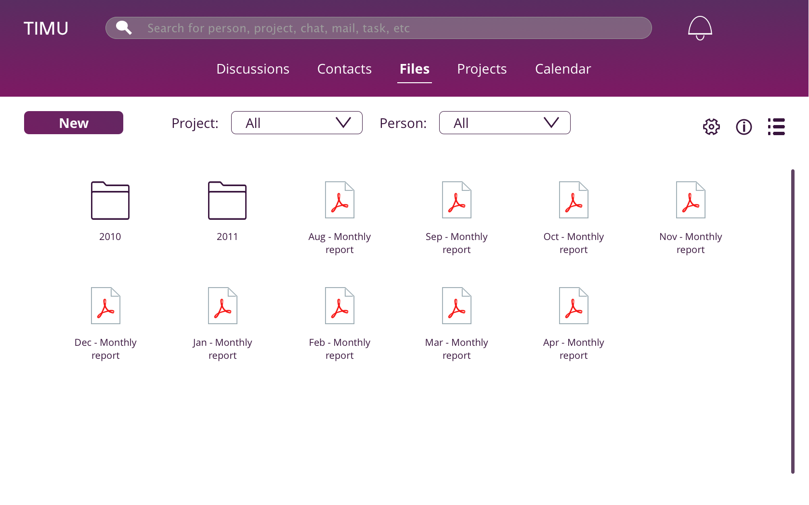
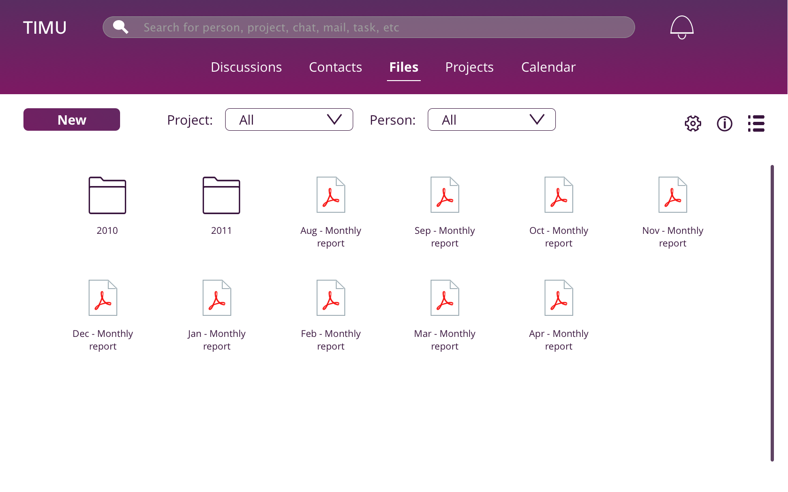

Problem :
As part of our UI/UX consulting class, we were given a tool - TIMU, which was built to make collaboration within office and educational spaces easier. While this product had identified a valid market, there were issues with the execution of the product. The product was difficult to navigate, the intended actions were difficult to find and the overall user experience with the product was frustrating. The task given to us was to find one pain point and fix that in the first iteration.

Exisiting home page
 
